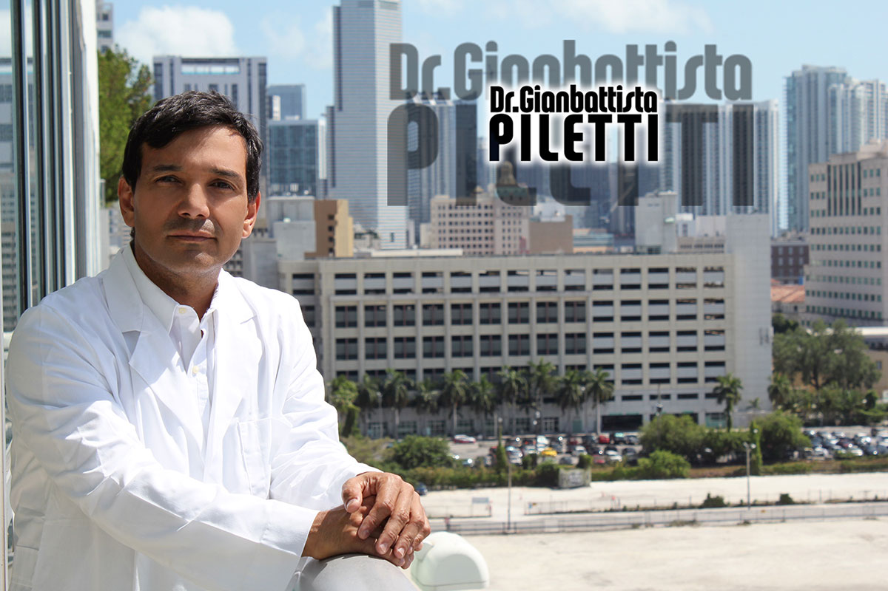

History
Born in Maracaibo, Venezuela on October 31 , 1965. From Italian father and Venezuelan mother. Her father established in Caracas and Maracaibo as a trader in the pharmaceutical industry where he managed several pharmaceutical establishments.
Dr. Piletti began his training in the school Our Lady of Chiquinquira French Catholic religious congregation Marist Brothers where he started and finished his primary and secondary studies. There tilts the plastic arts, painting, sculpture and parallel biology.
To finalize these basic studies started medical school at the University of Zulia receiving his medical degree in the year 1990 .
He began his medical career as an intern give the social insurance hospital Dr. Afolfo Pons where he discovers his deep preference for plastic surgery combining their surgical skills but his passion for art.
In 1994 the program will be general surgery residency at the University Hospital of Maracaibo where he acquired solid experience in handling trauma surgery, laparoscopic digestive and guided by diagnostic imaging procedures currently begins what gives a safe patient handling complicated.
In 1998 he was admitted to the Jalisco Institute of Reconstructive Surgery in Mexico worldwide prestigious training center Plastic Surgery led by Dr. José Guerrero Santos global pioneer in facial rejuvenation surgery. During this period in its formation is influenced by the likes of Jaime Planas, Ricardo Baroudi, Fernando Ortiz Monasteries, Thomas Biggs and James Grotting among others. In 2000 received his plastic surgeon title and hand surgeon from the University of Guadalajara.
Since then Dr. Gianbattista Piletti has cultivated important achievements in the field of medicine as coauthor of a book edited surgery when I am part of the group of professors of surgery at the Autonomous University of Guadalajara. a patent in the area of liposuction in the United States and numerous international participation in seminars and conferences both in the area of cosmetic and reconstructive surgery.
In 2010 Dr Piletti makes a break in their practice to explore the approach to plastic surgery in Europe in order to compare different points of view to this specialty , particularly in the area of breast reconstruction using microsurgery, visit important institutions as the National Tumor Institute in Milan Italy and Sweden in Uppsala Akademiska Sjukhuset.
Dr. Gianbattista Piletti currently resides in Miami and takes the scientific management of Therapmedic® addition to join the medical team ResultsMD as Medical Advisor of Plastic Surgery at its international premiere program in Cancun as an expert in the area of Rhinoplasty Ethnic even so He retains his professional practice in his hometown .
Expertise
Dr. Piletti has spent the last 15 years almost exclusively to facial and body cosmetic surgery performing learning of thousands of cases each year through the best way to achieve the best possible result.
Dr. Piletti is secured in each of their patients in the best possible physical and mental condition and plans each surgical step to achieve a result 100% predictable.
Ethic
Respectful and humane treatment of the patient and his family to follow a standard n each physician and Dr. Piletti biggest concern is their welfare and ensure that you get the desired by the surgical procedure you choose results. Dr piletti Staff will ensure that all your needs are met.
Selection of the best products and the most advanced technology will be made available for you.
Culture
Dr. Piletti medical training received by it were old school where the patient is given a friendly deal, dedicated and serene.
The Venezuelan Dr. Piletti to be identified with Hispanic patients from of the language, traditions, beliefs and customs making the patient feel at home , leading the process of surgery accompanied by the hand of someone who really cares about. So Dr. Piletti still full home